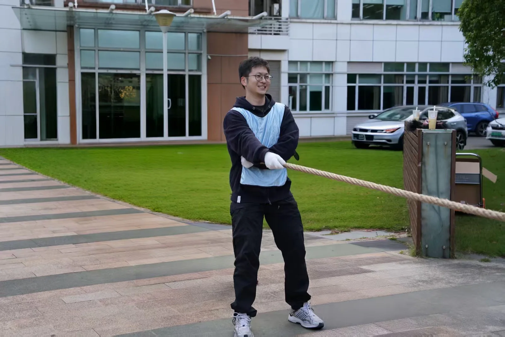
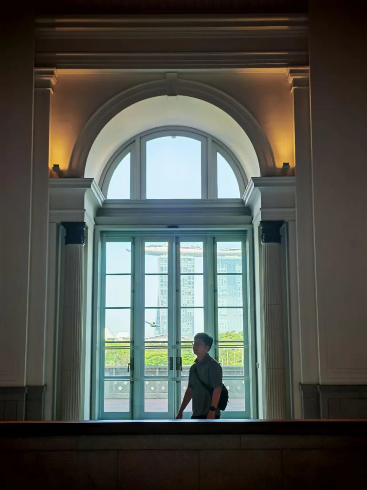

![顾树昊]()
业务页面、接口服务、数据模型与自动化工具
01 / 能力图谱
从工程实现，
走向质量闭环。
从业务系统开发出发，延伸到自动化与多端质量，再进入 Agent 执行链路和模型评测，形成从工程实现到质量闭环的三条能力路径。
端到端回归、多端兼容、性能与执行证据
上下文、工具调用、执行循环与结果裁决
能力主线
项目经验
方法与技术标签
02 / 驱动力
做不确定系统的
确定性测试。
从业务开发、自动化测试到 Agent 评测，我始终在解决同一个问题：如何把不确定行为变成可复现、可验证、可回归的证据？
- 证据优先用 Trace、指标与回放记录支撑结论
- 边界清晰明确条件、口径与适用范围
- 工程闭环先跑通关键路径，再沉淀回归资产
- 人工兜底自动判断之外保留必要复核
03 / 实习经历
从业务开发到
Agent 质量工程。
四段经历串起业务开发、大模型应用评测、Browser Agent 与通用 Agent 质量工程，呈现技术方向和质量对象的逐步演进。
锋滔资产
全栈开发实习生
前后端开发 · 接口与数据模型艾麒信息
AI 服务质量 / 大模型应用评测
长期记忆 · 多模态 · 性能稳定性哔哩哔哩
AI WebUI / Browser Agent 测试开发
页面感知 · 动作执行 · 失败回放
百度
DuMate AI 测试开发
Agent 质量 · E2E 自动化 · 发版回归04 / 影像记录
离开屏幕，
也在观察世界。
工作与生活的片段，记录空间、节奏与沿途所见。
-

个人一起完成一件事 -

个人光线经过窗边 -
 个人镜面里的自己
个人镜面里的自己 -
 旅行风景落日抵达天际
旅行风景落日抵达天际 -
 旅行风景沿林间继续向前
旅行风景沿林间继续向前 -
 旅行风景花开在湖岸
旅行风景花开在湖岸 -
 旅行风景抬头看见天光
旅行风景抬头看见天光 -
 旅行风景沿湖慢慢走
旅行风景沿湖慢慢走 -
 旅行风景暮色落在湖面
旅行风景暮色落在湖面 -
 旅行风景树梢之外
旅行风景树梢之外 -
 旅行风景云层染上紫色
旅行风景云层染上紫色 -
 旅行风景山海之间
旅行风景山海之间 -
 旅行风景月亮升起以后
旅行风景月亮升起以后 -
 旅行风景灯光长成森林
旅行风景灯光长成森林 -
 旅行风景城市亮起之后
旅行风景城市亮起之后 -
 旅行风景越过海港上空
旅行风景越过海港上空 -
 旅行风景船停在港湾
旅行风景船停在港湾 -
 旅行风景列车穿过山城
旅行风景列车穿过山城 -
 旅行风景俯瞰一座城
旅行风景俯瞰一座城 -
 旅行风景时间爬上墙面
旅行风景时间爬上墙面 -
 旅行风景桥通向海的另一边
旅行风景桥通向海的另一边 -
 旅行风景走进湖上薄雾
旅行风景走进湖上薄雾 -
 旅行风景雨落石桥
旅行风景雨落石桥 -
 旅行风景远山藏进雾里
旅行风景远山藏进雾里 -
 旅行风景柳岸之外的塔影
旅行风景柳岸之外的塔影 -
 旅行风景檐角与塔
旅行风景檐角与塔 -
 旅行风景茶山一层一层展开
旅行风景茶山一层一层展开 -
 旅行风景 · 海岸风机立在雾海
旅行风景 · 海岸风机立在雾海 -
 旅行风景 · 古街雨落在老街上
旅行风景 · 古街雨落在老街上 -
 旅行风景 · 山野云雾压低山脊
旅行风景 · 山野云雾压低山脊 -
 旅行风景 · 山野雪水流进湖里
旅行风景 · 山野雪水流进湖里 -
 旅行风景 · 山野湖泊贴着山谷展开
旅行风景 · 山野湖泊贴着山谷展开 -
 旅行风景 · 山野林间遇见一位住客
旅行风景 · 山野林间遇见一位住客 -
 旅行风景 · 山野雪峰从云层露面
旅行风景 · 山野雪峰从云层露面 -
 旅行风景 · 山城山色落在亭后
旅行风景 · 山城山色落在亭后 -
 旅行风景 · 重庆沿老街望向江面
旅行风景 · 重庆沿老街望向江面 -
 旅行风景 · 重庆江边晒太阳的猫
旅行风景 · 重庆江边晒太阳的猫 -
 旅行风景 · 重庆桥与轨道叠在一座城
旅行风景 · 重庆桥与轨道叠在一座城 -
 生活杂记落日沉到城边
生活杂记落日沉到城边 -
 生活杂记大树接住夕阳
生活杂记大树接住夕阳 -
 生活杂记湖岸的冬日层次
生活杂记湖岸的冬日层次 -
 生活杂记水边小屋
生活杂记水边小屋 -
 生活杂记树影后面的城市
生活杂记树影后面的城市 -
 生活杂记街区亮起暖光
生活杂记街区亮起暖光 -
 生活杂记穿过傍晚的街道
生活杂记穿过傍晚的街道 -
 生活杂记晚归路上的蓝
生活杂记晚归路上的蓝 -
 生活杂记雨后留一张空椅
生活杂记雨后留一张空椅 -
 生活杂记花园里的小角色
生活杂记花园里的小角色 -
 生活杂记云下的城市轮廓
生活杂记云下的城市轮廓 -
 生活杂记树下的一小片日常
生活杂记树下的一小片日常 -
 生活杂记夜里亮起的花
生活杂记夜里亮起的花 -
 生活杂记住区里的秋色
生活杂记住区里的秋色 -
 生活杂记花丛里的两位访客
生活杂记花丛里的两位访客 -
 生活杂记 · 骑行把路程画成轨迹
生活杂记 · 骑行把路程画成轨迹 -
 生活杂记 · 骑行穿过林间小路
生活杂记 · 骑行穿过林间小路 -
 生活杂记 · 骑行途中停靠一会儿
生活杂记 · 骑行途中停靠一会儿 -
 生活杂记 · 骑行两辆车，一段路
生活杂记 · 骑行两辆车，一段路 -
 实习记录 · 百度雨落园区
实习记录 · 百度雨落园区 -
 实习记录 · 百度园区的日常视角
实习记录 · 百度园区的日常视角 -
 实习记录窗外的上海
实习记录窗外的上海 -
 实习记录 · 哔哩哔哩夜色点亮园区
实习记录 · 哔哩哔哩夜色点亮园区 -
 实习记录 · 哔哩哔哩年末的工作日
实习记录 · 哔哩哔哩年末的工作日 -
 实习记录 · 哔哩哔哩文化墙上的热爱
实习记录 · 哔哩哔哩文化墙上的热爱 -
 实习记录 · 哔哩哔哩节日陈列细节
实习记录 · 哔哩哔哩节日陈列细节 -
 实习记录 · 哔哩哔哩小电视，放大
实习记录 · 哔哩哔哩小电视，放大 -
 实习记录办公区的一角
实习记录办公区的一角 -
 实习记录 · 哔哩哔哩大厅里的机甲
实习记录 · 哔哩哔哩大厅里的机甲 -
 实习记录下班路上的城市节奏
实习记录下班路上的城市节奏
05 / 正式简历